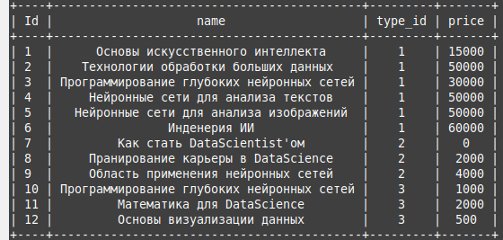
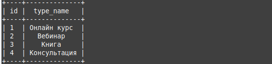
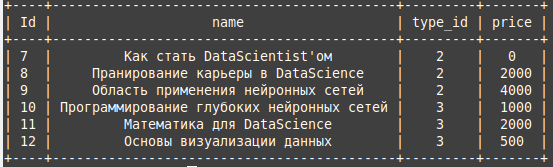
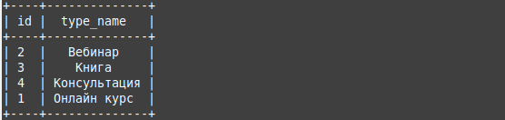
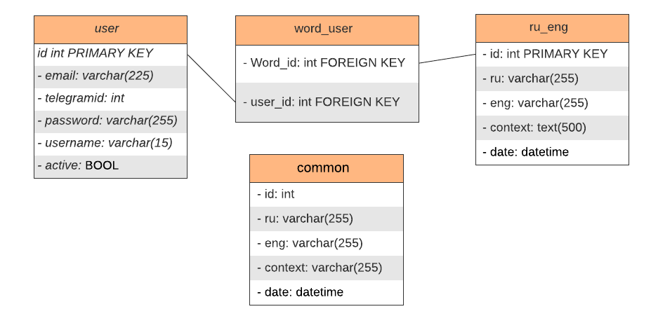

DML - Data Manipulation Language - это группа операторов определения данных.
DDL - Data Definition Language - это группа операторов определения данных.
Оператор SELECT нужен для выборси данных из бд
INNER JOIN - нужен для объединение нескольких таблиц
Допустим у нас есть таблица Products в которой определен FOREIGN KEY
type_id - ссылается на id таблици product_type, Вот ,собственно, и она:
Запрос:
SELECT * FROM Products inner join product_type on Products.type_id = product_type.id;Если удалим элемент с id == 1 из таблицы product_type, то удалятся записи из Products, которые ссылались на этот элемент и INNER JOIN эти неполные записи выводить не будет.
Пример:
DELETE FROM product_type WHERE id = 1;SELECT * FROM Products inner join product_type on Products.type_id= product_type.idLEFT JOIN - Один из типов внешнего объединение при котором, в запрос попадают строки для которых нет соответствия в других таблицах
Допустим у нас есть таблица Products в которой определен FOREIGN KEY ( type_id ) на PRIMARY KEY таблицы product_type
type_id - ссылается на id таблици product_type, Вот ,собственно, и она:
В таблице product_type присутствуют записи, ссылок на которые нет в таблице Products
Запрос:
SELECT * FROM product_type LEFT JOIN Products ON Products.type_id = product_type.id;Результат вышел с пустыми значениями , потому что "приоритет" отдался таблице product_type, а так как там присутствуют записи, ссылки на которые отсутствуют в таблице Products, то недостающие записи из таблицы Products заполнили NULL
RIGHT JOIN - тоже один из типов внешнего объединение при котором, в запрос попадают строки для которых нет соответствия в других таблицах, разница от LEFT JOIN лишь в порядке написания таблиц в запросе
Примеров здесь не будет, так как они почти полностью совпадают с примером LEFT JOIN, нужно лишь поменять местами таблицы
Оператор ORDER BY сортируют значения по одному или нескольких столбцам.
SELECT * FROM Products ORDER BY price;DESC- Сортировка по убыванию
ASC - Сортировка по возрастанию
INSERT - команда для добавляния в базу новой записи
INSERT INTO product_type (id,type_name) VALUES (5,"Онлайн встречи");Команда UPDATE применяется для обновления уже имеющихся строк.
Пример:
UPDATE product_type SET type_name = "Встречи в Zoom" WHERE id = 5;Оператор CREATE используется для создания баз данных и для создания талбиц
Для примера применение этого оператора возьмем мою базу данных, которую я использовал в своем проекте. Создавал я ее с помощью следующей команды:
create database rueng character set utf8 collate utf8_unicode_ci;где атрибут character set utf8 - явно устанавливает кодировку utf8
атрибут collate utf8_unicode_ci - устанавливает регистронезависимое сравн ение
Для примера создания таблиц, создадим таблицы по моей UML схеме , так как это было сделано в моем прокте 
Для их создания я использовал модели SQLAlchemy но по сути этот фреймворк конвертиртирует язык Python в язык SQL. Поэтому использовались следующие SQL команды:
CREATE TABLE IF NOT EXISTS `Common` (
`id` INTEGER PRIMARY KEY AUTOINCREMENT NOT NULL ,
`ru` varchar(255) NOT NULL,
`eng` varchar(255) NOT NULL,
`date` datetime NOT NULL);
Между таблицами ru_eng и user существует связь "Многие ко многим" следующий код , создает такую связь:
CREATE TABLE IF NOT EXISTS user (
id INTEGER NOT NULL PRIMARY KEY,
email varchar(225) NOT NULL,
telegramid varchar(225),
password varchar(225) NOT NULL,
username varchar(225) NOT NULL,
active bool
);
CREATE TABLE IF NOT EXISTS ru_eng (
id INTEGER PRIMARY KEY,
ru varchar(225) NOT NULL,
eng varchar(225) NOT NULL,
context text(500),
date datetime NOT NULL
);
CREATE TABLE IF NOT EXISTS word_user (
user_id bigint(20) NOT NULL,
word_id bigint(20) NOT NULL,
FOREIGN KEY (user_id) REFERENCES user (id) ON DELETE RESTRICT ON UPDATE CASCADE,
FOREIGN KEY (word_id) REFERENCES ru_eng (id) ON DELETE RESTRICT ON UPDATE CASCADE,
PRIMARY KEY (user_id, word_id)
);
Оператор ALTER используется для изменения объектов базы данных.
В своем проекте я его не использовал, но заню как ее применять.Вот примеры:
Добавить столбецalter table мем add column azaza boolean; Переименовать столбец
alter table мем rename column name to hero_name;Удалить столбец
alter table мем drop column lolkek;Переименовать таблицу
alter table мем rename to мемасы ;Оператор DROP удаляет таблицу или базу данных
его на проекте его так же не использовал но знаю примеры
Удалить базу данных
DROP DATABASE ruengУдалить таблицу
DROP TABLE мемасы;